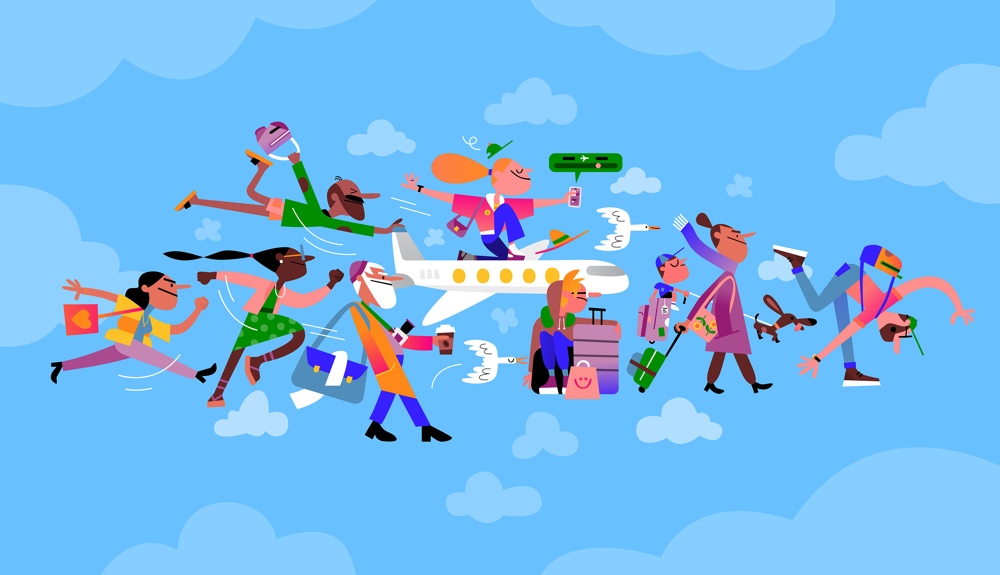
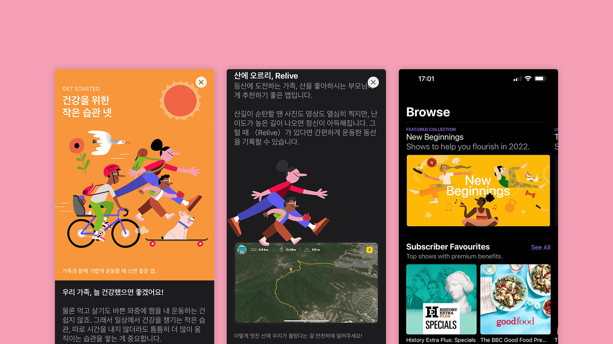
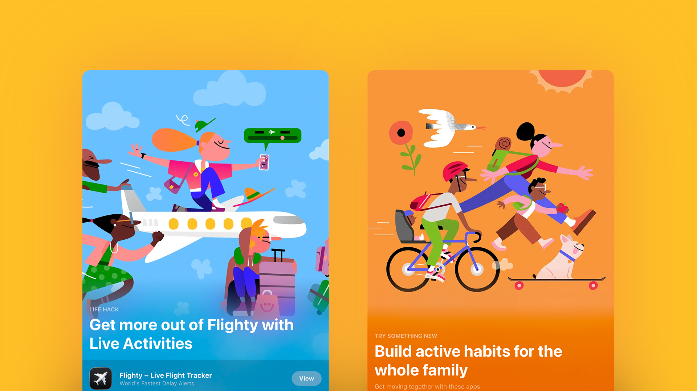

App Store
A series of illustrated cards created for Apple's Today Tab, the editorial front page of the App Store and Podcast Store. Each card was built around a specific app or curated set, using character work and bold composition to catch attention in a space where illustration competes with photography and UI. The cards were featured across multiple regions, which meant the work had to read cleanly at small scale while holding up as a full-bleed feature.

